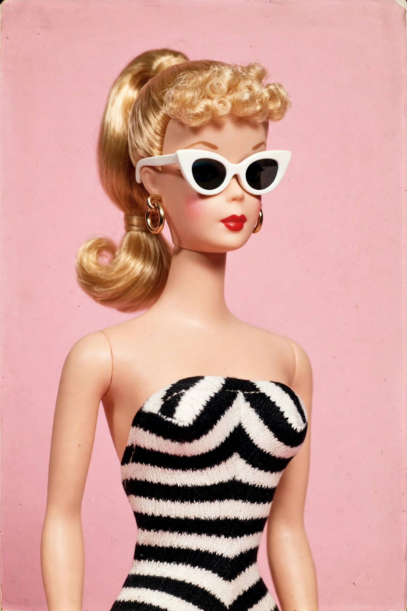

Barbie is a fashion doll franchise created by American businesswoman Ruth Handler, manufactured by Mattel and launched on 9 March 1959. The figurehead of a brand that includes a range of dolls and accessories, Barbie has been an important part of the toy fashion doll market for over six decades.

Handler was inspired by the German Bild Lilli doll. Barbie debuted at the American International Toy Fair in New York City, wearing a black-and-white zebra-striped swimsuit. Her full name is Barbara Millicent Roberts, from Willows, Wisconsin.
The brand expanded to include boyfriend Ken (1961), friends, careers, houses, cars and films. Animated films began in 2001, and the live-action Barbie film (2023), directed by Greta Gerwig and starring Margot Robbie, grossed over $1.4 billion worldwide.
Barbie has been criticised for promoting unrealistic body images, while also praised for presenting diverse careers and, in recent decades, dolls of varied body types, skin tones and abilities.